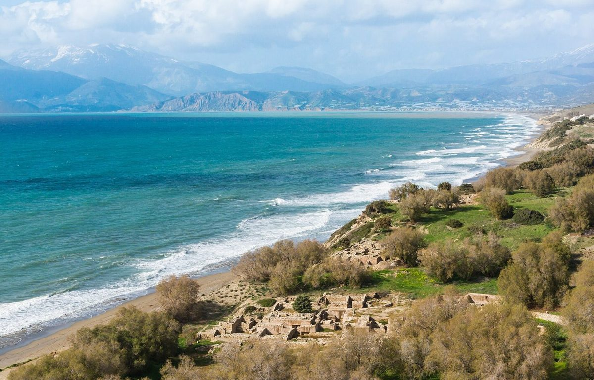
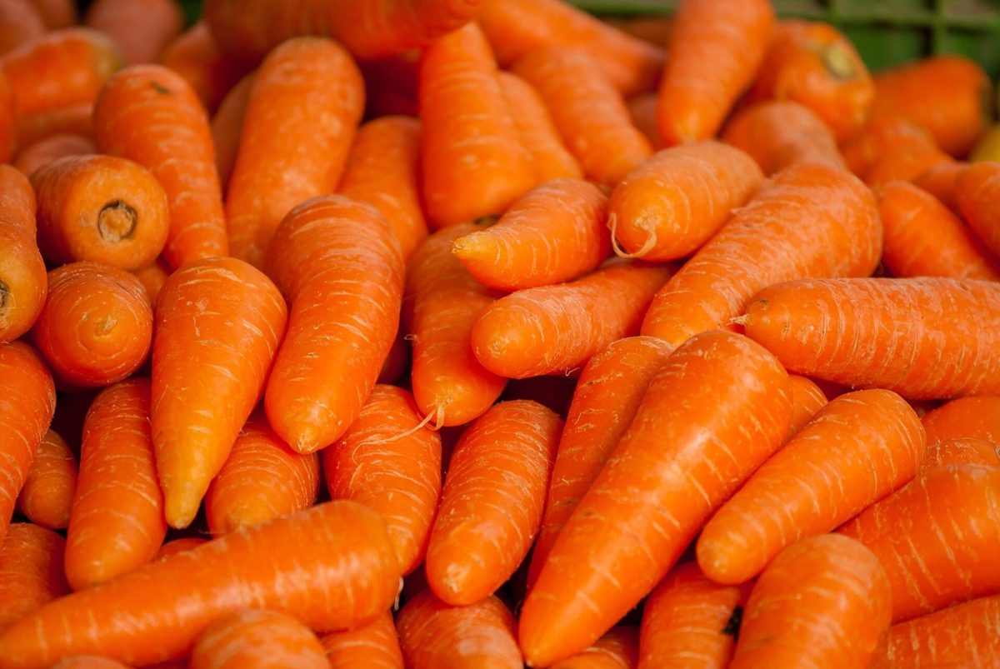

ACCESS
アクセス



所在地
お店の場所
| 所在地 | 〒959-1281 新潟県燕市桜町５ |
|---|---|
| 電話 | 準備中 |
| 営業時間 | 準備中 |
| 定休日 | 準備中 |
| ご予約 | 準備中 |
| 駐車場 | 準備中 |
| SNS | Instagram @kissa.tsubameya |
地図は住所をもとに表示しています。営業時間などは、Instagramもあわせてご確認ください。
イメージ
写真はフリー素材


写真はイメージです。お店のものではありません。
ACCESS

所在地
| 所在地 | 〒959-1281 新潟県燕市桜町５ |
|---|---|
| 電話 | 準備中 |
| 営業時間 | 準備中 |
| 定休日 | 準備中 |
| ご予約 | 準備中 |
| 駐車場 | 準備中 |
| SNS | Instagram @kissa.tsubameya |
地図は住所をもとに表示しています。営業時間などは、Instagramもあわせてご確認ください。
イメージ

写真はイメージです。お店のものではありません。